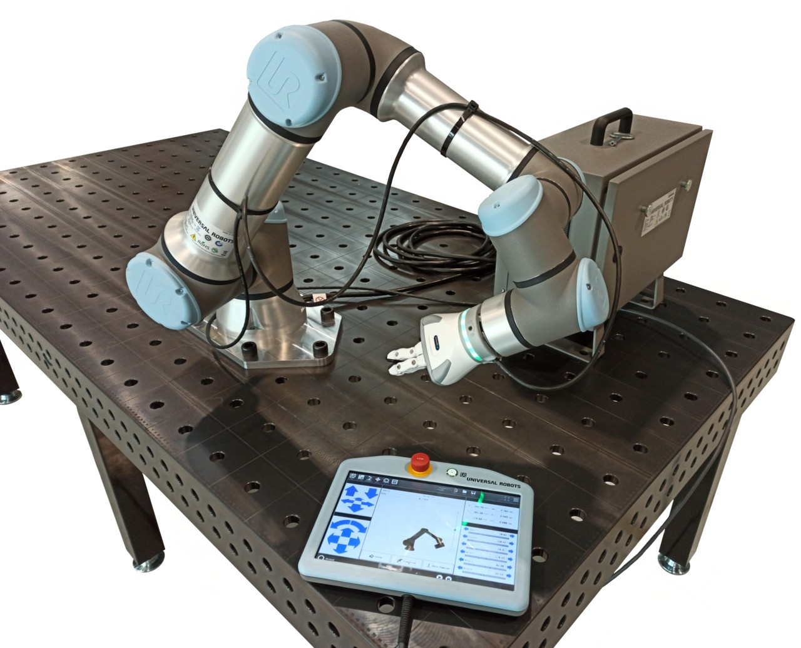

01 / Мегасайенс
СКИФ
Сборка физической части и разработка программного обеспечения для первого мегасайенс-проекта России — СКИФ.
FutureKinetix объединяет робототехнику, автоматизацию и инженерную разработку. Мы поставляем готовые платформы, создаём индивидуальные решения и сопровождаем их на объекте.

Работаем на стыке инженерии, физики, математики и информационных технологий.
Наша команда — первоклассные специалисты с большим опытом работы в полном спектре инженерных, физических, математических и информационных задач для бизнеса и науки.
Берём ответственность за весь путь проекта: от постановки задачи и разработки физической части до интеграции, программного обеспечения, запуска и сопровождения.

Практический опыт команды охватывает физические системы, автоматизацию и программное обеспечение.
Сборка физической части и разработка программного обеспечения для первого мегасайенс-проекта России — СКИФ.

Разработка системы высокоскоростного 3D-сканирования для получения точных измерений и последующей обработки данных.
Разработка и реализация уникального оборудования и экспериментальных установок, включая сборку физической части эксперимента и финальное программное обеспечение.
Поставка модульных платформ для сезонного ухода за территорией.
Роботы разных классов и назначений.
Разработка автоматизации с учётом процесса заказчика.
Уточняем операцию, условия работы, требования и ограничения площадки.
Разделяем оборудование, инженерные работы, установку и сервис в предложении.
Помогаем запустить систему, освоить её работу и организовать обслуживание.
Поможем выбрать роботизированную платформу, спроектировать автоматизацию или организовать сервис.
Для подбора решения расскажите о площадке, задачах и желаемом сроке запуска.